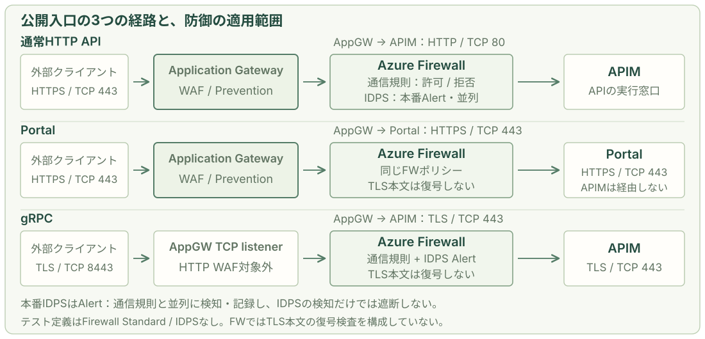
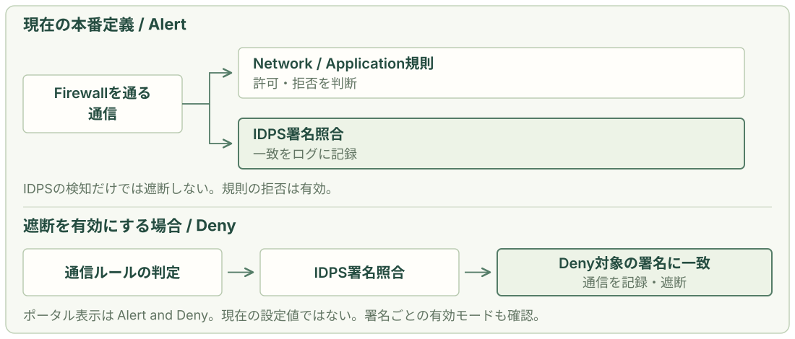
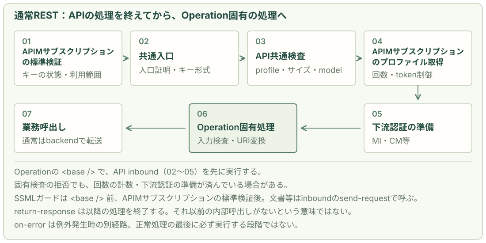

要求の経路と、各機能の判断を結び付ける。
egakumi-coreは、公開入口のApplication Gateway、経路上のAzure Firewall、APIの実行窓口APIMで要求を制御します。保守では「どこを通ったか」「何を検査したか」「どこで止まったか」を分けて確認します。
| 機能 | 判断する内容 | 現行の指定・実装 |
|---|---|---|
| AppGWのWAF | HTTP要求にSQLi・XSS等のWeb攻撃パターンや上限違反があるか。 | test / productionともPrevention。条件に応じて要求を拒否。 |
| FWの通信規則 | 送受信先・ポート・プロトコル、外向きFQDN等が許可された通信か。 | 必要な通信をAllow。許可に一致しなければ既定で拒否する。 |
| FWのIDPS | 通過通信に既知の攻撃の署名が一致するか。 | productionはPremium / Alertで検知・記録。testはStandardでIDPSなし。 |
| APIMのポリシー | APIMサブスクリプション・操作・model・入力条件・利用枠が有効か。 | 標準のAPIMサブスクリプションキー検証と共通・API・Operationのポリシーを実行する。 |
現在の本番定義では、通常の通信規則が許可・拒否を判断し、IDPS Alertはその処理と並列に検知します。IDPSが要求を順番に合否判定してAPIMへ渡す構成ではありません。
2026-11-01時点のリポジトリ定義・configと公開params例を参照しています。以後の「指定値」はこの資材の値で、稼働中Azureの取得値や実機試験結果ではありません。通信区画・NSG・UDRは01章、利用者のPortal操作は03章、本人接続の詳細は04章で扱います。
すべての要求が、同じ検査を通るわけではない。
まず転送経路と暗号化の境界を読みます。通常APIはAppGWでHTTPSを終端し、HTTPでFW経由の内部APIMへ送ります。Portalの入口はAPIMへ転送せず、gRPCのTCP入口にはHTTP WAFが適用されません。

平文で見える区間
通常APIのAppGW → APIMはHTTP / TCP 80です。WAFに加え、FWのIDPSもこの区間の内容を、署名の方向・プロトコル等の条件に従って検査できます。
復号していない区間
FWにはTLS復号検査の設定がありません。Portal・gRPCやHTTPSの外向き通信で、暗号化内部の本文をIDPSが読めるとは扱いません。PEへの直接経路など、FWを通らない通信もあります。
PortalからCore APIを呼ぶ場合は、そのAPI呼出しが別途APIMの検査を受けます。WebSocketはHTTP Upgrade後のフレーム、WebRTCは別のメディア経路を区別します。APIごとの適用範囲は入力ガードと利用制御で確認します。
前段で止まった要求は、後段の業務処理へ進まない。
ここでは、APIMサブスクリプションキーを使う通常のHTTP APIを例にします。経路はWAF → FW → APIMですが、各機能の検査単位と、拒否時に見える応答は異なります。
- AppGW：HTTPS終端とWAF検査
適用するパス別ポリシーでHTTP要求を検査。拒否した場合、その要求をFW・APIMへ業務転送しない。
- FW：通信規則で判定、IDPS Alertで並列検知
AppGW → APIMのTCP 80等、必要な接続を許可する。現行のIDPS検知だけでは遮断しない。通常規則が拒否すればAPIMへ届かない。
- APIMサブスクリプションの標準検証とポリシー実行
キーの状態・範囲を標準機能で検証し、共通入口、API共通制約、利用枠、下流認証の準備、Operation固有処理へ進む。詳細な実行順と例外はAPIMの実行順で確認する。
| 要求・設定の例 | 判断する機能と結果 | 後段の確認 |
|---|---|---|
| WAFの遮断条件に一致 | WAFが拒否。原因規則・Actionを確認し、スコア遮断では集計結果も追う。 | その要求に対応するAPIMログは通常ない。 |
| WAF通過・FW Allow、IDPS Alert検知 | IDPSの一致は記録。通常規則が許可していればAPIMへ進む。 | キーが不正ならAPIM標準検証で401。IDPS検知と別の判断。 |
| 有効キー、契約外model / profile | API共通制約で403等を返す。 | 通常の回数制限・下流認証準備より前の拒否。 |
| 共通制約は通過、PII / 文書の専用検査が不正 | Operation固有ガードで400等を返す。 | 先に回数を加算し、下流認証の準備が済んでいる場合がある。 |
403・429・timeoutだけで原因を断定しません。FWの破棄はHTTPエラー応答とは限らず、APIMでも複数の機能が同じ状態コードを返します。共通のログ調査で、到達した層と実際の処理結果を照合します。
検査条件と拒否の判断を、1つのポリシーにまとめる。
WAF（Web Application Firewall）はAppGWが復号したHTTPを検査します。WAFポリシーは「有効状態と動作モード」「管理ルール」「カスタムルール」「除外とログ保護」をまとめた設定です。このサービスではOWASP CRS 3.2の管理ルールを基礎にします。
| 構成要素 | 判断すること・このサービスでの使い方 |
|---|---|
| 動作モード | Preventionで検知した要求を条件に応じて拒否する。Detectionは記録して通過させるモード。現行設定はPrevention。 |
| 管理ルール | OWASP / 3.2。SQLi、XSS、パストラバーサル、HTTPプロトコル違反などの攻撃パターンを検査する。 |
| カスタムルール | 管理ルールより先に評価する追加条件。raw本文用の専用ポリシーでは、URI・query・ヘッダー・Cookieの不審なパスをBlockで補う。 |
| 除外・ログ保護 | 正規データの誤検知に必要な項目と原因ルールを限定する。ログの値をマスクする設定は、検査の除外とは別に持つ。 |
CRSの標準動作では、一致したルールの重大度に応じて異常スコアを加算し、合計5以上になるとPreventionで遮断します。例：Criticalは5点、Warningは3点。個別の検知ログMatchedと、集計によるBlockedを区別します。サイズ制限やカスタムBlockには、それぞれの拒否条件があります。
Azureの仕様：異常スコアと動作モード / カスタムルールの評価。カスタムAllowに一致すると後続の検査を止めるため、データ項目の誤検知調整には限定した除外を使います。raw本文の規則調整は後述します。
本文の受入上限と、検査範囲をそろえる。
次の値は、リポジトリのconfig/test.jsonとconfig/production.jsonに共通する指定値です。Bicepモジュールの省略時既定値とは区別して読みます。
| 設定項目 | 指定値 | 意味 |
|---|---|---|
| SKU / 状態 / モード | WAF_v2Enabled / Prevention | HTTP WAFを有効にし、拒否まで行う。EnabledはBicep共通定義。 |
| 本文検査 | requestBodyCheck: true | 対応形式の本文を検査する。Bicep共通定義で有効。 |
| 本文受入上限 | 2000 KiB | wafMaxRequestBodySizeInKb。ファイル部分を除く要求本文の上限。 |
| 本文検査範囲 | 2000 KiB | wafRequestBodyInspectLimitInKb。本文をどこまで検査するか。受入上限とは独立した設定。 |
| ファイル上限 | 4 MiB | wafFileUploadLimitInMb。multipart内のfilenameを持つファイル部分に適用。 |
| 上限の強制 | 本文・ファイルともtrue | requestBodyEnforcement / fileUploadEnforcement。Bicep共通定義で有効。 |
受入上限だけを増やすと、検査範囲との差が生まれます。rawな音声・PDFには通常の本文上限が適用され、4 MiBのファイル上限をそのまま使えるわけではありません。文書APIには専用の1025 KiB設定があります。APIMの操作上限とは測る対象・単位が異なるため、サイズの受渡しも確認します。
Bicepの省略時既定値：本文受入128 KiB / 検査128 KiB / ファイル100 MiB。最終的には配備先の適用ポリシーを確認します。仕様：本文・ファイル上限と本文検査。
パス別の設定は、共通ポリシーを置き換える。
通常はApplication Gateway全体のポリシーを使い、正規データやプロトコルの調整が必要なパスだけ専用ポリシーへ関連付けます。URLのパスは/api/tools/piiのような要求先の部分です。
Gateway全体の共通ポリシー
wafpol-agw-<stem>
パス別の指定がない要求に適用する。
正確な公開パスに専用ポリシー
認証callback、データ入力、音声、文書など。共通設定から完成した専用ポリシーを生成する。
Azureでは、URI別 → リスナー別 → Gateway全体の順に具体的なポリシーが優先されます。親と子を続けて検査する仕組みではありません。この実装はsharedWafPropertiesを使い、本文検査・上限・ログマスク・追加ルールを明示的に合成します。data用ポリシーはPreventionを固定しています。
wafCustomRules: []やwafExclusions: []は、設定ファイルから共通で追加する指定が空という意味です。用途別ルールやmanifestの除外は、これに別途合成されます。
企業管理のexistingWafPolicyIdを指定する構成では、既存ポリシーを再利用し、自動生成する専用ポリシーで置換しません。調整は企業側管理者との対応になります。仕様：ポリシーの適用範囲と優先順位。
正規のデータを通すために、除外する範囲を絞る。
モデルに説明させるSQLやHTML、不透明な認可コードにも攻撃に似た文字列が含まれます。誤検知したら、要求先・対象項目・原因ルールを特定して調整します。
Microsoftの認可コードがSQLi規則に一致する場合
- どの要求か
/api/auth/callback/microsoft- どの項目か
RequestArgValues / Equals / code
引数名codeで選んだ「値」を対象とする。- どの検査か
942430・942440のSQLi規則のみ- 維持する保護
- stateなど他の引数、他の管理ルール、本文検査、サイズ上限、ログ保護。
Gatewayの本人確認callbackにも専用設定があり、/auth/connections/browser/identity-callbackではcode値をSQLi規則942430・942440・942450から除外します。通常データ欄の調整はwaf-data-exclusions.jsonをBicepとPythonで共用します。
パス照合は大文字小文字を区別せず、HTTP方式では絞れません。引数の除外は同じURIの同名queryにも適用されます。本文だけの例外とは扱わず、認証・method・入力の制約をAPIMやPortalで維持し、queryやmethod違いも試験します。
仕様：項目別・ルール別の除外 / パスの照合。集計規則949110を除外して問題を消す運用は行いません。
JSON以外の本文は、形式に合わせて調整する。
音声・文書ではContent-Typeやraw本文が管理ルールに一致します。JSONの項目除外で対応できない入力は、対象の公開パスに専用設定を置きます。
| 対象 | 調整する内容 | 維持・補完する内容 |
|---|---|---|
| 正規のSSML・WAV | 対応する完全パスで、Content-Type制約の920420を無効化。正本Speechのraw本文では930110も調整。 | 他の管理ルールと本文検査は維持。HTTP方式と許可するMIMEはAPIMの操作制約で確認。 |
| raw本文の相対パス | 正本SpeechのSSML・WAVと固定文書APIでは、正常な本文中の../が930110に誤一致するため、該当パスでこのルールを無効化。 | URI・query・ヘッダー・Cookieに、パストラバーサルを拒否する4本のカスタムBlockを追加。930100など他の規則は維持。 |
| 文書解析API | /tools/documents/v1/analyzeはWAF受入上限・検査範囲をともに1025 KiBに設定。 | 公開APIの契約上限1 MiBはAPIM側で強制。WAFの上限とAPIの上限を対応させる。 |
4本のBlockはCRSの全検査・全正規化を再現するものではなく、raw本文中のパス文字列を許容する限定した判断です。画像・音声・PDFをデコードした意味内容をWAFが検査するわけではありません。WAFで緩和した形式でも、APIMの専用入力ガードと操作の上限は維持します。
raw入力の補完ルールの正本：waf-raw-body-controls.json。検査対象を増減した場合は、正常な本文と非本文の攻撃対照を組み合わせて再検証します。
本番は検知、テストはIDPSを使わない。
SKU・動作モード・署名ごとの上書きはconfig、IP範囲や通信単位の除外はparamsで指定します。次の表は現行configと公開params例に基づきます。
| 設定 | 本番 | テスト |
|---|---|---|
network.firewall.sku | Premium | Standard |
idpsMode | Alert：署名一致を記録 | Off：IDPS機能を使用しない |
signatureOverrides | []：利用者による署名モードの上書きなし | [] |
threatIntelMode | Alert | Alert |
params例のidpsPrivateRanges | []：独自の方向分類範囲を指定しない | []：IDPS用には使用しない |
params例のbypassTrafficSettings | []：通信単位の追加除外なし | [] |
BicepはPremiumの場合だけintrusionDetectionを構成します。StandardのOffは入力検証で取り除き、AzureへIDPS設定自体を送信しません。この資材はPremiumのモードをAlert / Denyに限定し、Standardへ有効なIDPS設定を混ぜると検証で拒否します。
既知の悪性IP・FQDNなどとの通信を脅威情報と照合します。両環境のthreatIntelModeもAlertで、これによる遮断は有効にしていません。idpsModeを変更しても、Threat Intelligenceの動作モードは自動では変わりません。
出典：config/production.json / config/test.json / params/production.example.json / params/test.example.json。仕様：Threat Intelligence。
通信の特徴を署名と照合し、モードに応じて処理する。
署名は、脆弱性を突く通信やマルウェアの指令通信（C2）などに特徴的なパターンです。Microsoftが管理・更新する署名を使い、通信方向・プロトコル・ポートなどの条件に合う通信を照合します。

Alert：検知ログと通信規則を分けて読む
IDPSは規則処理と並列に動きます。同じ通信について、Network / Application規則のAllow・Denyとは別にIDPS検知が記録される場合があります。
Deny：遮断対象の署名が通信を止める
configのDenyはポータルのAlert and Denyに対応します。規則処理後にinlineで作用し、通常規則のAllowログがあってもIDPSで拒否し得ます。TCP RSTは返さず、timeout等として見えることがあります。
ポリシーがDenyでも、一部署名は既定でAlert Onlyです。最終動作は署名ごとの有効モードまで確認します。WAFの異常スコア集計やHTTP 403と同じ仕組みではありません。仕様：Alertの並列処理・Denyのinline処理 / 署名のモードと上書きの制約。
通過した通信も、署名の適用条件で検査する。
転送経路とTLS境界を押さえたうえで、IDPSの方向分類と例外を確認します。FWを通る全通信へ、すべての署名が同じ条件で適用されるわけではありません。
| 設定・条件 | 確認する意味 |
|---|---|
idpsPrivateRanges | Inbound / Outbound / Internalの方向分類に使う。公開例の[]は独自範囲を指定しない意味で、検査対象が空という意味ではない。 |
| 署名の条件 | 既定のprivate判定はRFC 1918。公開例のAppGW → APIMはprivate IP同士でInternal（East-West）。元の利用者がInternet上でも、Inbound専用署名がすべて適用されるとは限らない。 |
signatureOverrides | 指定した署名の動作を変更する。本番指定は[]。Denyを設定する場合も、署名ごとの有効モードや変更できない署名を確認する。 |
bypassTrafficSettings | 指定した通信をIDPS検査から外す。公開params例は[]。WAFの「パス × 引数 × 原因ルール」とは例外の粒度が異なる。 |
snatPrivateRangesはNetwork規則の送信元変換を判断する設定です。公開例のAppGW → APIMはprivate宛のNetwork規則なので、送信元AppGWのIPを保持します。Application規則は別のSNAT動作を持ち、IDPSのprivate範囲を設定してもSNATの設定にはなりません。
外向き通信の許可先やFWを通らないPE経路は01章で確認します。仕様：IDPSの方向分類 / 署名の制約 / SNATのprivate範囲。
API共通処理の後に、Operation固有処理へ戻る。
APIMのXMLは、スコープ名の一覧をそのまま順番に実行する仕組みではありません。Operationの<base />の位置でAPIの処理を取り込み、APIの<base />で共通入口を継承します。WAFのURI別ポリシーによる置換とは異なります。APIは共通認証の完了マーカーを確認し、なければ503で停止します。

通常OperationやPII・文書の<base />は、API inboundの利用枠・MI / CM等の準備・accepted traceまでを先に実行します。その後に専用の入力検査・変換へ戻るため、不正なPIIや文書でも、検査の段階によっては計数や内部照会が済んでいます。
| 段階・例外 | この実装で確認すること |
|---|---|
| 通常RESTの転送 | 入力等の処理をinboundで行い、通常APIのbackendはforward-requestを直接定義。SSE応答を読み切らず中継し、outboundで応答と監査を扱う。 |
| SSML宣言ガード | Operationの<base />より前に動く。したがって共通入口・回数制限・下流認証準備より前。ただしAPIMサブスクリプションの標準検証は先に行われる。 |
| 文書解析等の専用操作 | 文書解析はinboundのsend-requestで開始・照会し、return-responseで終了する。実呼出しを通常backendだけで探さない。 |
| 明示拒否と例外 | return-responseはその場で以降の処理を止める。常にoutboundやon-errorを通るわけではない。実行例外等はon-errorへ分岐する。 |
Productポリシーだけに共通認証を置きません。API単位・全API向けのAPIMサブスクリプションではProductポリシーが適用されない場合があります。仕様：スコープと継承 / return-response / on-error。
検証済みのAPIMサブスクリプションを、APIの実行主体にする。
通常の業務APIはsubscriptionRequired: trueで登録します。APIMサブスクリプションの標準検証でキーの状態とAPIへの利用範囲を確認し、その後、共通ポリシーが入力形式と検証済みAPIMサブスクリプションIDを確認します。
| 確認するもの | 設定・実装 |
|---|---|
| APIMサブスクリプションとAPIの範囲 | APIMが無効・停止・範囲外のキーを拒否する。通常キーはreleased-apis製品に所属するAPIを使い、released: trueでその製品へ関連付ける。未releaseのAPIも検証用製品に所属する保護APIとして配備され得る。 |
| キーの送り方 | 公開params例はapi-keyヘッダー。core-subscription-key-headerへ同じ値を設定する。共通ポリシーでヘッダーが1個・空でないこととcontext.Subscription.Idを確認する。 |
| URLへのキー混入 | queryのsubscription-key・api-keyを拒否する。任意の別名ヘッダーやBearer形式のキーを、自動変換して受け入れる実装にはしない。 |
| AppGW経由の入口 | core-l7-ingress-enabledが有効なら、AppGWが設定するX-Core-L7-Ingressの値と一意性を確認。不一致は403。現行test / productionはgRPC有効に伴い入口証明も有効になる定義。native gRPCは登録した専用TCP経路として扱う。 |
実行主体はsubscription:<APIMサブスクリプションID>です。共通入口で利用者のEntra JWTを一律に検証する構成ではありません。Portalのログイン、追加の本人接続、APIMから下流への認証は別の処理です。同じAPIMサブスクリプションの主キー・副キーは同じ主体と利用枠になります。
APIMサブスクリプションごとのAPI利用範囲はAPIMサブスクリプションスコープ・Product所属で決まり、Operation・model・profileの条件はAPI契約として検査します。本人接続のブラウザー用APIには、Operation・方式・パスを限定した匿名の補助入口があります。通常業務APIの認証を省略する例外としては扱いません。仕様：APIMサブスクリプションとキーの検証。
使える操作とモデルを、公開契約から決める。
各APIのJSON定義が、公開パス・HTTP方式・Operation・認可モード・入力制約の正本です。Bicepがauthorization.operationConstraintsをAPIポリシーへ埋め込み、選択した操作の条件を検査します。
同じChat APIでも、入力profileで契約が変わる
- 操作
POST /models/openai/v1/chat/completions- 既定profile
chat：テキスト入力、本文32 KiB（32,768 bytes）。- 画像を含む場合
X-Egakumi-Profile: visionを選び、そのprofileの許可モデルと入力種別に一致させる。本文上限は2,000,000 bytes。- 照合する内容
- profileの存在と一意性、modelの許可一覧、画像・file・audio等の入力種別、本文サイズ、指定した生成トークン項目。
未知のprofileや、profileと合わないmodel・入力種別は拒否します。profileはchat・vision等の入力契約で、APIMサブスクリプション別の利用上限を持つ「APIMサブスクリプションプロファイル」とは別のものです。要求ヘッダーを変えてAPIMサブスクリプションの利用枠を切り替えることはできません。
登録済みのbackend、Operation、profileの上流URIを使います。Graphの/meや文書解析の照会先なども固定契約に限定します。選択profileやモデルの値から、任意の下流ホストへ転送先を自由に変更させません。
出典：openai-inference-v1.json / gateway.xml。型・値・モデルに対する条件は操作ごとに異なり、すべての入力属性を一律に検査する仕組みではありません。
APIごとの入力上限と、専用の検査を組み合わせる。
WAFの共通上限を通過した本文も、APIごとの上限に従います。JSONは保持した本文の実バイト数と指定した項目の条件を確認し、binary / multipart / textでは許可MIME・明示サイズとOperation側の検査を組み合わせます。
| 操作 | 指定値・入力契約 | 主な専用検査 |
|---|---|---|
| Speech TTS / STT | TTS：SSML 8 KiB。STT：WAV 1 MiB。 | TTSはDTD / ENTITYの実宣言を400 InvalidSpeechMarkupで拒否する。SSML全体の意味・schemaは下流の検査も必要。 |
| 文書解析 | 許可するPDF・画像、1 MiB。 | model query、MIME、Content-Encoding、実バイト数とファイル先頭の形式を確認。結果の照会先は固定ホストに限定。 |
| PII | JSON 32 KiB。{text, language}。 | この2項目だけを許可し、型、空文字、許可言語、不要queryを確認。Language API用要求へ変換する。 |
| OpenAI画像編集 | 許可modelのmultipart、要求本文全体4 MiB。boundaryや他の項目も含む。 | 共通側でContent-Type・Content-Length・Transfer-Encodingと上限を確認し、Operationのサイズ検査も行う。 |
共通JSON経路の検査は、設定した数値・選択肢・配列件数などに限定されます。JSONのContent-Typeも一律には検査しません。通常Operationのvalidate-contentはサイズを強制する設定で、schema検証の子要素はありません。PII・文書・SSML等は専用ガードの実装を別に確認します。
WebSocketの検査は接続開始時のonHandshakeです。接続後のフレーム、gRPCのストリーム内容、WebRTCの音声メディアを、このHTTP入力ガードで全検査する構成ではありません。通常RESTのSSE応答も中継を維持し、全イベントのschemaを検証するわけではありません。
WAFのファイル上限4 MiBはmultipartのファイル部分、OpenAI画像編集のAPIM上限4 MiBは本文全体です。文書はWAF 1025 KiBに対しAPIM 1 MiB、visionはWAF 2000 KiBに対しAPIM 2,000,000 bytesです。同じ数値や似た単位でも、許容される要求が同一とは判断しません。
binary / multipart / textの共通検査は上限違反に413、対応外MIMEに415、明示長の不正に411を返します。PII等の専用ガードではMIME不正を400にする場合もあるため、各ガードの拒否条件と状態を確認します。仕様：validate-contentのサイズ・内容検証。
検証済みのAPIMサブスクリプションIDで、APIをまたいで利用を数える。
回数制限はrate-limit-by-keyで実行します。カウンターはキーの実値や送信元IPではなくAPIMサブスクリプションIDに結び付け、同じAPIMサブスクリプションの主キー・副キーや複数APIの要求を同じ枠で数えます。
| 設定元 | 現行指定と有効条件 |
|---|---|
| configの共通設定 | test / productionともrateLimits.subscriptionKey.enabled: false。calls=60・期間60秒は指定されているが、この値で全APIMサブスクリプションを60回/分に制限中とは説明しない。 |
| paramsのAPIMサブスクリプション別上書き | 公開例のsubscriptionKey.overridesは[]。Portal接続が無効な場合はconfig / paramsの設定を選ぶ。 |
| PortalのAPIMサブスクリプションプロファイル | core-subscription-profile-enabledがtrueなら、内部APIからSQLのrequestRateを取得して優先する。nullなら回数制限なし。SQLの現値はこの教材では取得していない。 |
| 取得とキャッシュ | APIMサブスクリプションIDとschemaVersionを照合し、有効な値を30秒キャッシュ。取得失敗・不正な応答は、無制限にせず503 LimitProfileUnavailableで停止する。 |
API共通制約を通った要求をinboundで1回加算し、SSEの終了まで待ちません。未知model / profileや共通サイズ検査の拒否は計数前ですが、PII・文書等のOperation固有検査による拒否は計数後になる場合があります。gRPCはRPC開始、WebSocketは握手を数え、生成MCPは参照先RESTの実処理で計数します。登録済みの取消・終了操作には免除がありますが、認証や所有者検査は維持します。
有効なプロファイルのnullは未設定、接続障害は503です。回数超過は429、Retry-After、X-Core-Error-Code: RATE_LIMIT_EXCEEDEDを返します。下流が返した429を、同じカウンターの超過と決めつけません。
この実装の実行主体はsubscriptionKeyです。configにあるuser / application欄は有効化を入力検証で拒否します。分散したAPIMのレート制御は厳密な課金台帳ではありません。仕様：rate-limit-by-key。
1要求の生成上限と、APIMサブスクリプションの利用量を分ける。
出力トークン数の指定、毎分のトークン数、期間内の累積量は別の制約です。入力検証だけで利用量の上限が設定されるわけではありません。
| 制約 | 正本・実行方法 | 確認すること |
|---|---|---|
| 1要求の生成上限 | model-capabilities.jsonからモデル別上限を展開し、model-limits.xmlで入力を検証。 | モデルに合うmax_completion_tokens等を使う。数値上限がある契約は所定の指定を必須にし、超過・不正型・別名の混在を拒否。 |
| 毎分のトークン量 | APIMサブスクリプションプロファイルのtokensPerMinuteをllm-token-limitへ渡す。 | 対応操作で入力・出力の消費を制限。未設定は適用なし。超過時は標準ポリシーで429。 |
| 期間内の累積量 | tokenQuota.tokens / periodを同じ標準ポリシーへ渡す。 | Hourly / Daily / Weekly / Monthly / Yearly。未設定は適用なし。超過時は標準ポリシーで403。 |
累積カウンターはcore-tokens-v1:<APIMサブスクリプションID>で共有します。適用対象はこの登録資材が選ぶFoundry OpenAIのHTTP Chat / Responses操作です。音声・画像・Embedding・gRPC・WebSocket等へ、同じトークン制限が自動で効くとは扱いません。
モデル上限がdynamic / unsupported / unverifiedの場合は、推測の数値を補いません。トークン利用制御は入力推定を有効にしており、ストリーミングや同時要求では推定・計数の限界があります。音声の接続回数、フレーム、WebRTCメディアの利用量も別です。
APIMサブスクリプションプロファイルが未接続なら、既定のnull値からトークン制限は有効になりません。LLM利用量の数値ログはこの資材ではChat操作に限定しており、Responsesのquota対応と数値監査の対応範囲も異なります。仕様：llm-token-limitの対象・超過応答・計数 / WebSocketのonHandshake。
入口のキーを取り除き、下流専用の権限で接続する。
利用者がCoreを呼ぶためのAPIMサブスクリプションキーと、APIMがモデル・ツールへ接続するための資格情報は別です。入口の認証が成功しても、下流の接続権限があるかは接続方式ごとに確認します。これはAPI inbound内の準備で、Operation固有検査の完了や業務呼出しの成功とは別です。
| 対象 | この実装の処理 |
|---|---|
| 入口の資格情報 | 転送前にAPIMサブスクリプションキー、受信Authorization、AppGW識別値、Core本人接続セッション等を除去する。入力用profileヘッダーも下流へ渡さない。 |
| Foundry等のAzureサービス | 登録済みaudienceに対し、APIMのManaged Identityでtokenを取得する。下流のRBAC等と合わせて接続可否を確認する。 |
| 登録済みの外部サービス | backend設定に応じた専用キー・ヘッダー等を生成する。入口のAPIMサブスクリプションキーを外部サービスのキーとして流用しない。 |
| Graph等の本人OAuth接続 | APIMサブスクリプションに加え、X-Core-Connection-SessionをbrokerのSQL台帳で本人・APIMサブスクリプション・provider・期限等と照合してから、Credential Managerの下流tokenを利用する。 |
CMのget-authorization-context identity-type="managed"はAPIMの接続利用権を確認します。元の利用者の本人接続セッションは、その前にCoreで照合します。任意の接続名やUPNを送るだけで本人の証明にはしません。追加の本人認証でAPIMサブスクリプションの利用枠も切り替えません。
接続の再認証が必要な場合の409と、下流の権限不足の403を区別します。ブラウザーのサインイン・接続管理は04章の本人接続を参照します。出典：credential-connection.xml / credential-session-use.xml。
同じ要求の痕跡を、層ごとのキーでたどる。
最初に経路と到達段階を確かめ、状態コードとログの処理結果を照合します。前段で止まった要求は後段に届きません。ログがない場合は未到達のほか、SKU・診断設定・時間範囲も確認します。
| 層 | ログと相関キー | 結果の読み方 |
|---|---|---|
| WAF / AppGW | AGWFirewallLogs・AGWAccessLogs。同一TransactionId。 | 適用PolicyId、原因規則、MatchedとBlocked、アクセス結果を照合する。集計規則だけで除外しない。 |
| FW | AZFWNetworkRule・AZFWApplicationRule・AZFWIdpsSignature等。FWリソースID、UTC時刻、IP / port / protocol。 | 規則のAllow / DenyとIDPSのActionを分ける。Denyへ変更した環境ではAllowログだけで最終通過としない。 |
| APIM | ApiManagementGatewayLogsのCorrelationId、応答のapim-request-id、Core traceのrequestId。 | ResponseCode、BackendResponseCode、LastError、各phaseを照合。acceptedだけではOperation検査や業務の成功にならない。 |
IDPSテーブルにTransactionId列はありません。AppGWの代理接続では、FWから見える送信元も元クライアントのIPとは異なります。到達時刻・経路・通信情報と各層のIDを合わせて追い、403・429・timeoutだけで拒否した機能を決めません。
WAF：原因ルール・適用PolicyId・TransactionId
HTTP 403はAPIMやアプリケーションからも返ります。ステータスだけでWAF遮断と判断せず、応答の特徴とApplication Gatewayのログを照合します。診断ログはLog Analyticsへ出力する構成です。
AGWAccessLogs
どの要求にどのHTTP状態を返したかを確認します。時刻、リスナー、TransactionId、HttpStatus、ServerStatusを手掛かりに要求を絞ります。
AGWFirewallLogs
同じTransactionIdでPolicyId、RuleId、Actionを追います。949110は異常スコアの集計結果なので、その前の原因ルールと対象項目まで確認します。
AGWFirewallLogs
| where TimeGenerated > ago(1h)
| where TransactionId == "対象のTransactionId"
| project TimeGenerated, TransactionId, PolicyId,
RuleId, Action, Message, DetailedMessage
| order by TimeGenerated ascログのscrubbingはヘッダー・Cookie・引数・JSON引数・POST引数の値を対象に設定します。これは検査除外ではありません。Accessログのquery除去は別のWorkspace変換で行うため、2つの設定を合わせて確認します。
診断設定：application-gateway.bicep / monitoring.bicep。列の仕様：AGWFirewallLogs / AGWAccessLogs。
FW：署名・Action・送受信情報
Firewallの診断設定は、Network規則、Application規則、Threat Intelligenceの構造化ログを収集し、PremiumではIDPSログも追加します。検索先はLog Analytics、監査用の保存先は日本側のcollectJapan Storageです。
AZFWIdpsSignature
| where TimeGenerated > ago(1h)
| where _ResourceId =~ "対象FirewallのリソースID"
| project TimeGenerated, Action, SignatureId, Severity,
Category, Description, Protocol,
SourceIp, SourcePort, DestinationIp, DestinationPort
| order by TimeGenerated desc| テーブル | 何を確認するか |
|---|---|
AZFWIdpsSignature | 署名ID・重大度・説明・Actionと送受信IP / port / protocol。検知と遮断を区別する。 |
AZFWNetworkRuleAZFWApplicationRule | 通信規則がAllow / Denyのどちらを判断したか。Denyモードでは規則のAllowだけで最終通過と判定しない。 |
AZFWThreatIntel | 既知の悪性宛先等の脅威情報に一致したか。IDPSの署名一致と分けて読む。 |
IDPSテーブルにTransactionId列はありません。対象FWのリソースID、UTC時刻、送受信IP・port・protocolでFWのログを照合し、AppGW / APIMの追跡情報へたどります。AppGWの代理通信では元クライアントのIPと一致しない点も考慮します。
Alertは検知ログの動作モードで、メール等の通知が設定される意味ではありません。現行のログアラート定義にはIDPS検知用クエリがありません。出典：monitoring-bindings.bicep。列の仕様：AZFWIdpsSignature。
APIMサブスクリプション・Operation・拒否原因・下流応答
APIMは応答へapim-request-idを付けます。問い合わせ時はこのIDと時刻・API・Operationを手掛かりに、Gatewayログの応答コード、下流応答、ポリシー例外を確認します。
ApiManagementGatewayLogs
| where TimeGenerated > ago(1h)
| where _ResourceId =~ "対象APIMのリソースID"
| where CorrelationId == "対象のapim-request-id"
| project TimeGenerated, CorrelationId, ApiId, OperationId,
ApimSubscriptionId, ResponseCode, BackendResponseCode,
LastErrorSource, LastErrorReason
| order by TimeGenerated asc| 応答・事象の例 | 確認する処理 |
|---|---|
| 401 / 入口の403 | 標準APIMサブスクリプション検証、キー形式、Productとの関連、信頼したAppGW入口。標準認証が先に拒否すると、共通traceが残るとは限らない。 |
| 入力拒否 / 413・415・411等 | 選択profile・model・Operation、本文サイズ、MIME、明示長、専用ガード。状態コードは各検査の実装と合わせる。 |
| 429 / トークン枠の403 | APIM回数制限、TPM・quota、下流からの応答を区別する。Retry-AfterやCoreのエラー識別子、LastErrorの発生元を確認。 |
| 500・503 / 下流の失敗 | モデル上限の構成不足（500）、共通認証やAPIMサブスクリプションプロファイルの構成・取得障害（503）、下流認証・接続・応答を切り分ける。 |
Coreのtraceはaccepted・rejected・backend-response・policy-errorを記録します。acceptedはAPI inbound末尾で、Operation固有検査より前にも残ります。専用検査の通過や最終成功とは判定しません。traceと標準ログを照合し、WAFのTransactionIdやFWの通信情報をAPIMのIDと同一とは扱わないようにします。
要求・応答本文と認証ヘッダーを診断へ保存しない設定です。GatewayLlmLogsやWebSocket接続ログは、利用量・接続状態の別の証跡として確認します。列の仕様：ApiManagementGatewayLogs。
認証値・実業務本文を証跡へコピーせず、各層のログマスク・本文0 byte・query除去の設定を維持します。詳細欄にKQL、原因ごとの確認項目、診断設定の出典をまとめています。
正本を変更し、正常系と拒否系を再確認する。
「通るようにした」と「必要な保護を維持した」を別々に確認します。まず実際に適用されたポリシーと原因を特定し、該当する正本へ変更を反映します。
- 再現と到達段階の確認
正規契約のパス・方式・形式・サイズと有効設定を照合。ログから拒否した層・規則・ポリシー・署名を特定する。匿名401は通過の参考証拠で、機能成功としない。
- 計画・適用・読み戻し
環境を特定し、変更前の対象経路・ポリシー・識別子を残す。正本と生成結果の差分を確認し、配備後の有効設定も読み直す。秘密を含む全構成をそのまま証跡へ出力しない。
- 正常利用と対照要求の確認
正規入力の認証付き成功、拒否すべき入力、サイズ境界、query / header / 隣接パス、計数時点を確認する。変更した経路・プロトコル・署名版に合わせ、必要な試験を選ぶ。
| 対象 | 変更・確認・復元で残す条件 |
|---|---|
| WAF | データ除外はmanifest、raw補完は対応する正本へ。完全パス・引数・原因ルールの範囲と、共通保護の合成を確認する。CLIはETagを照合し、企業管理の既存WAFは自動変更しない。profile削除だけでは既存の経路関連付けが撤去されないため、復元時はIaCで明示する。 |
| FW IDPS | 署名overrideと通信bypassの影響範囲を分ける。Standardのテスト環境ではIDPS実検知・遮断を確認できない。Denyへの変更はPremium環境で正規通信・無害な試験入力・ログAction・timeoutや遅延を確認する。署名更新により新たな検知が現れ得る。 |
| APIM | API定義・XML・fragment・Named Valueの有効状態を照合。SQLAPIMサブスクリプションプロファイルは30秒キャッシュと取得障害503を考慮する。基盤のazd upとAPI登録を分け、API配備後に共通XMLをETag付きで統合・読み戻す。既存の独自処理との不一致は確認して解消する。 |
Azureへ接続せず確認するコマンド
python3 scripts/waf_policy.py --config params/dev.local.json
python3 scripts/waf_probe.py --dry-run --output .state/waf-plan.json
python3 scripts/render_apim_policy.py --config params/dev.local.json \
--output .state/service-policy-review.xmlparamsは配備対象と同じファイルへ置き換えます。renderの出力先は未作成のファイルを指定します。これはローカル計画と共通XMLの出力で、稼働中の値の取得やAPI別の完全な展開結果ではありません。WAFの実適用は--executeを明示する別の操作です。
構成・XMLのローカル検証と、実サービスへの検知・拒否・正常成功の試験を区別します。参考：WAF互換性 / FW診断の構成テスト / APIM共通認証 / 回数制限 / トークン制限。
配置・ポリシー・観測を、同じ変更で対応させる。
WAFはパスへの関連付け、FWは経路とPolicy、APIMはAPI定義からのXML合成まで確認します。設定値だけを変更したつもりでも、どの要求へ適用されるかは関連付けと実行順で決まります。
WAF：設定・除外・互換性試験
| 担当ファイル | 目的と確認点 |
|---|---|
| config/test.json config/production.json | 環境ごとのgateway設定。SKU・Prevention・サイズ指定・追加ルールを確認する。 |
| infra/main.bicep | 公開API定義から音声・文書などの対象パスを選び、モジュールへ設定を渡す。 |
| infra/modules/application-gateway.bicep | 共通ポリシー・用途別ポリシーを生成し、リスナー・パス・診断ログを関連付ける。 |
| apps/gateway/waf-data-exclusions.json apps/gateway/waf-raw-body-controls.json | 実測したデータ項目の除外と、raw本文用の補完ルールの正本。変更を再配備後も維持する。 |
| scripts/waf_policy.py | ポリシーと経路を計画・照合し、必要な差分を適用する。基盤定義と同じmanifestを使う。 |
| scripts/waf_probe.py docs/testing/waf-compatibility.md | 合成入力による互換性・攻撃対照の試験と、判定・制約・運用手順。 |
FW：ポリシー・経路・診断
| 担当ファイル | 目的・確認点 |
|---|---|
| config/production.json config/test.json params/production.example.json | SKU・idpsMode・threatIntelMode・署名override。paramsにはIP範囲とbypassなどの企業固有入力。 |
| infra/modules/network.bicep | firewallPolicyのPremium分岐、IDPS設定、通常の通信規則、FWへの既定経路と戻り経路。 |
| infra/modules/network-bindings.bicep infra/modules/portal-network.bicep infra/modules/application-gateway.bicep | 確定したAPIMのIPへの経路・許可規則、PortalのTCP 443許可、AppGWのHTTP / HTTPS / TCPの転送方式。 |
| infra/modules/firewall-diagnostics.bicep infra/main.bicep | 実FWと同じSKUを診断設定へ渡し、DedicatedログをLAW・監査Storageへ送る。IDPSカテゴリはPremiumのみ。 |
| scripts/deployment/helpers/configuration.py tests/test_configuration.py tests/test_firewall_diagnostics.py | Standard / Premiumの入力制約と構成・診断のローカル検証。実検知の試験とは区別する。 |
APIM：API定義・生成・適用の照合
| 担当ファイル | 保守時に確認すること |
|---|---|
| apps/gateway/apim/apis/*.json model-capabilities.json | 公開パス・方式・released・モデル・profile・サイズ・生成上限。入力契約の追加はWAF除外・対照試験にも反映する。 |
| policies/service.xml gateway.xml / protocol.xml api-publication.bicep | 全体の入口、API・Operationの制約、<base />、fragment、backend認証、診断設定の合成。 |
| subscription-profile.xml rate-limit.xml / token-limit.xml Portalの接続設定 subscription_profiles.py | Named Valueの接続有効状態・URL・secret参照、SQLの上限、キャッシュ、適用対象とカウンター。接続は初期falseで、対象APIの処理とsecret参照の準備を照合してから有効化する。 |
| scripts/deployment/helpers/apim_authentication.py scripts/deploy_gateway.py scripts/render_apim_policy.py | 共通XMLの生成・統合・照合とAPI登録。管理対象ブロックの不一致は停止し、既存の独自処理と整合させる。 |
参照実装は5ae9c99を基にした2026-11-01時点の作業ツリーです。ローカル定義、生成物、稼働中の有効設定を別々に照合します。
何を通過し、何が未確認かを、要求の順に説明する。
基盤管理者が説明する単位は、一つの要求です。経路を選び、各機能の判定と、その要求に実際に適用された設定を結び付けます。
- 01
経路を特定する
通常API・Portal・gRPCの入口と暗号化を確認する。全要求がWAF・FW・APIMを同じ形で通るとは扱わない。
- 02
判断と実行位置を読む
WAFの拒否、FW規則と並列IDPS、APIMサブスクリプション・共通制約・利用枠・Operation固有処理を区別する。
- 03
到達段階と最終結果を確認する
Allowやaccepted、匿名401を業務成功の証拠にしない。各層の相関キーでログを照合し、正規の処理結果まで確認する。
確認：文書APIが400を返し、APIMにacceptedと計数の痕跡がある。矛盾するか？
矛盾しません。文書OperationのbaseでAPI共通制約・利用枠・下流認証準備・accepted traceを実行した後、文書固有の形式検査で400を返し得ます。Operationの入力が通ったことや、解析サービスの業務成功をacceptedから判断せず、最終応答と専用ガードの実行位置を確認します。
確認：WAFで拒否した要求にAPIMログが見つからない。何を確かめるか？
まず同じ要求がWAFのBlockedで停止したかを確認します。その場合、後段へ業務転送されないためAPIMログがないことと整合します。状態コードだけで判断せず、WAFのTransactionIdと原因規則、対象経路・時間範囲・診断設定を照合します。
個別設定に戻るときも、入口の経路 → 適用する検査 → 拒否・通過の観測 → 正本と有効値の順で確認します。